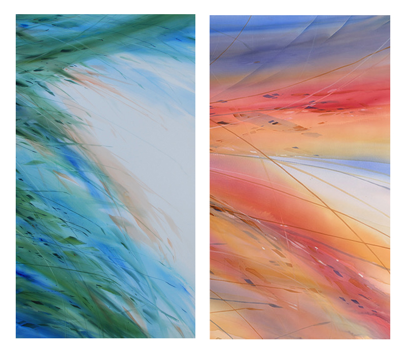

Michael Ireland: Different Strokes
The Evanston Art Center (EAC) is excited to welcome the public to Different Strokes.
Born (b. 1952) and raised in the near west suburbs of Chicago, Michael Ireland began his formal studies at the American Academy of Art. It was there he developed a passion for painting that has continued throughout his life and career. His painting style and technique challenges the scale and format associated with traditional transparent watercolor, resulting in some recent works measuring over 20 feet in length. He is a member of the National Watercolor Society and Illinois Watercolor Society. Recently, one of his works “Conifer,” received the Helen Browne Memorial Award at the 88th Annual Juried Exhibition of the Hudson River Valley Art Association. Today, Ireland’s home and studio is in Cary, Illinois.
Different Strokes will be exhibited in the Second Floor Gallery of the Art Center. The opening reception is free and open to the public. This exhibition is partially funded by the Illinois Arts Council, a state agency, and the EAC’s general membership.
EXHIBITION DATES: January 17 – February 11, 2026
OPENING RECEPTION: Sunday, January 18th, 2026, 1-4 pm
GALLERY HOURS: Monday–Thursday, 9 am–6 pm; Friday, 9 am–5 pm; Saturday & Sunday, 9 am–4 pm *Registration is required. Visit www.EvanstonArtCenter.org for more information.